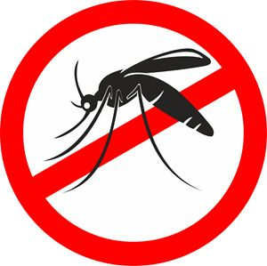

La Ludopatía y la Salud Mental de los Jóvenes
La ludopatía juvenil en Argentina ha aumentado considerablemente, especialmente entre los adolescentes, impulsada por el fácil acceso a apuestas online. Aunque estas actividades están prohibidas para menores de 18 años, la publicidad constante y la presencia de influencers que promueven estas prácticas facilitan su difusión. Muchos jóvenes comienzan a apostar sin ser conscientes de los riesgos y, eventualmente, algunos desarrollan adicción, lo que afecta negativamente su bienestar emocional y mental, provocando ansiedad y depresión.
Además de los problemas relacionados con las apuestas, la salud mental de los jóvenes en general sigue siendo una preocupación creciente. La presión social, el estrés académico y los desafíos emocionales propios de la adolescencia contribuyen al aumento de trastornos psicológicos. Para combatir esto, es esencial que las políticas públicas implementen medidas más estrictas en cuanto a la regulación de las apuestas y, además, promuevan campañas de concientización sobre los peligros de la ludopatía. Es fundamental también integrar la salud mental en las políticas educativas y de bienestar social, asegurándose de que los jóvenes tengan acceso a apoyo psicológico adecuado.
→ PARA MÁS INFORMACIÓN HAGA CLIC EN LAS IMÁGENES ←
Prevención del Dengue
En las últimas semanas, Argentina ha intensificado sus esfuerzos en la lucha contra el dengue. Una de las estrategias más innovadoras implementadas en el país es el uso de mosquitos estériles, una técnica que ha demostrado ser efectiva en otros países. Este método consiste en liberar machos de mosquitos criados en laboratorio y tratados con radiación, lo que les impide reproducirse. De esta manera, al emparejarse con hembras, no se generan nuevas larvas, lo que ayuda a reducir la población de mosquitos y, por ende, el riesgo de transmisión de enfermedades como el dengue.
El programa piloto, que comenzó en áreas como Ezeiza, Buenos Aires, está siendo monitoreado de cerca por expertos para evaluar su efectividad. Sin embargo, las autoridades también insisten en que la prevención sigue siendo fundamental: eliminar agua estancada en recipientes, usar repelentes y colaborar en las fumigaciones comunitarias son acciones clave para frenar la propagación del mosquito transmisor. Con estos esfuerzos, el objetivo es frenar la expansión de este virus, que ha afectado a varias provincias en los últimos años.